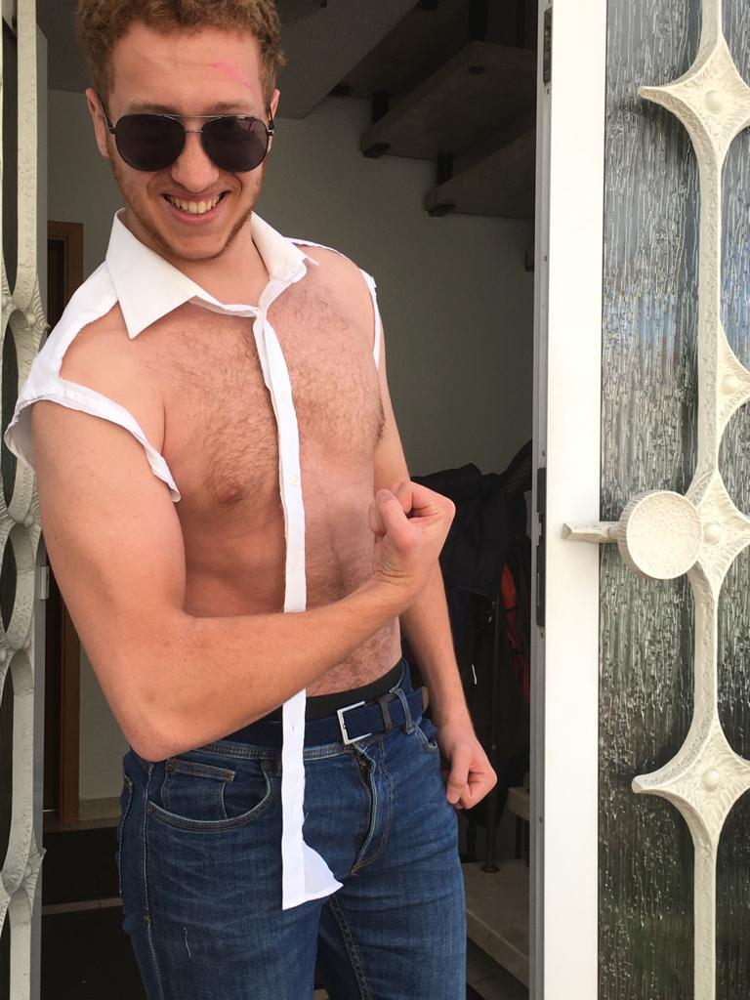

Ein paar Informationen über mich:
Meine Hobbys sind Badminton spielen und Mountainbiken fahren, aber auch das designen und drucken von
3D-Objekten.
Ich bin bei jeder verrückten Idee dabei und habe keine Angst mich auch mal lächerlich zu machen ^^
Weitere Informationen über mich
| Name: | Lennard Hurst |
| Alter: | 19 |
| Wohnort: | Ketsch |
| Studiengang: | MIB 2 |